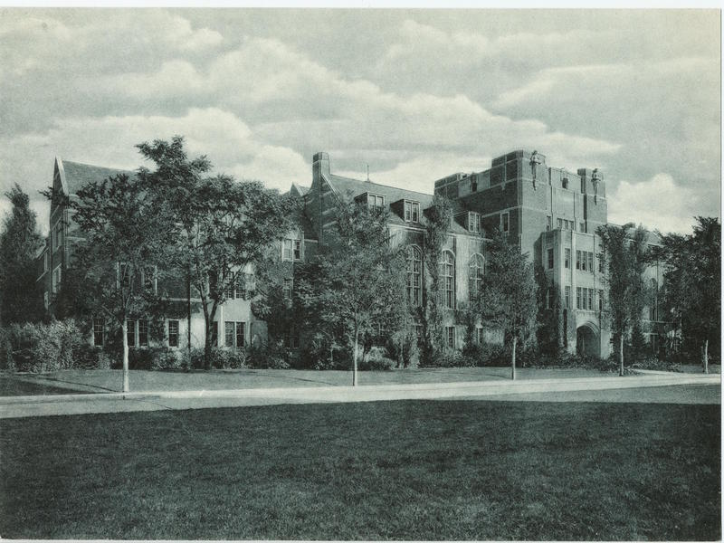
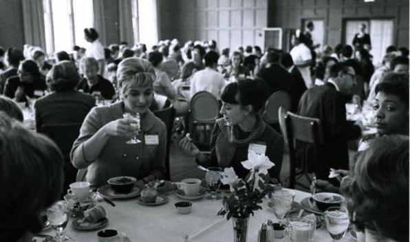

Welcome to the website of the Center for the Education of Women+
We proudly support students, faculty, staff, and the surrounding community with:
Events & Workshops
Funding
Counseling
Advocasy and Initiatives
History
Established in 1964, the Center for the Education of Women+ was a pioneering university women’s
center.
Designed to serve the needs of women students as well as women returning to school or work, CEW+
(then
known as the Center for the Continuing Education of Women) was founded with a three-part mission
of
service, advocacy, and research. The Center for the Education of Women+ (now known as CEW+)
continues
its work today, serving University students, staff and faculty, community members, and all
genders,
facing education, employment, or other life issues.
Opening

Michigan League Building
The Center for Continuing Education of Women opened its doors in a two-room space in the
Michigan
League. The Center’s original mission: direct service to women who wished to return to an
uncompleted education; advocacy in working with the administration and faculty, and research
evaluating the Center’s services and outcomes.
First Conference

Photos from Conference Lunch
Entitled "Opportunities for Women through Education," the conference and its model were a
huge
success. The event was attended by 240 women and more than 350 had to be turned away.
Diversity, Equity & Inclusion
Since 1964, CEW+ has worked to remove obstacles that impact women and other marginalized groups
at
U-M.
CEW+ has also served as a bridge for returning students and community college transfers and
fought
for
family-friendly policies that have benefited both men and women. Our understanding of the
challenges
faced by underserved students and underrepresented faculty and staff allows us to contribute
greatly
to
diversity at U-M by providing supports and resources that are responsive to the emerging needs
of
these
groups.
Diversity, Equity and Inclusion Strategic Plan
The Office of Diversity, Equity and Inclusion has spotlighted and supported the Financial
Empowerment Initiative as a highlight of CEW+’s DEI 2.0 plan. An overview of the initiative
was
presented as part of the University-wide DEI 2.0 Information Session on Oct. 18, 2023.
Selected text from President’s Diversity, Equity & Inclusion Charge:
From being one of the first universities to admit women in 1870 to our historic defense of
race
conscious admission policies at the U.S. Supreme Court in 2003, the University of Michigan
has
had a fierce and longstanding commitment to diversity, equity and inclusion. This commitment
rests upon our recognition of the history in the United States of racial, ethnic, and gender
discrimination as well as our understanding that our progress as an institution of higher
learning will be enhanced with a vibrant community of people from many backgrounds.
The CEW+ Leadership Council
We are pleased to have the volunteer efforts of many talented and generous individuals and have a
long
tradition of a volunteer advisory board. Without this group’s commitment, leadership, and
ambassadorship, our work would not be possible.
The Leadership Council is our current active group of advisors.